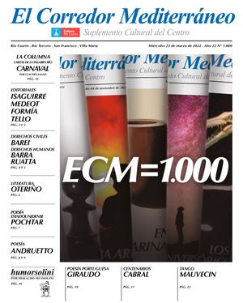

Aniversario
El Corredor Mediterráneo cumple veinticinco años de trayectoria efectiva y 1059 entregas. Si bien se creó hace más de treinta años, en este período ha sufrido algunas pausas debidas, fundamentalmente, a las vicisitudes económicas de Argentina y a la frágil voluntad de algunos políticos para sostener un proyecto cultural de largo alcance.
Desde que en 1991, en medio de la vorágine depredadora de las políticas neoliberales que conducirían al país a su bancarrota -tal como ahora vuelve a suceder-, el arquitecto Jorge Ramallo, apoyado por algunas personalidades de gran vocación cultural, entre las que cabe destacar a Omar Isaguirre, Justo Sorondo y Myrna Medeot, y más tarde por el diario Puntal, fundó ECM a modo de “canal bioceánico” por el que circularan las voces de los ciudadanos, la publicación se ha mantenido, con las pausas señaladas, en un extraordinario faro cultural del sur de Córdoba, primero, y en la última década en un agente de integración territorial conectado con el resto del país, América Latina y Europa.
Durante estos veinticinco años de trayectoria efectiva, cabe destacar la capacidad adaptativa de ECM a las exigencias socioculturales y demandas de los lectores según el contexto y las circunstancias de cada época. En este sentido, durante la dirección de Myrna Medeot, con el apoyo de la diseñadora Ana Alonso, autora de la versátil matriz gráfica, y de Diego Formía, se privilegió en los contenidos las aportaciones literarias y artísticas de autores locales, consagrados o no, lo cual estableció una mayor cercanía a una gran masa de lectores que, quizás, recordaba la ebullición cultural de la Río Cuarto anterior a la Dictadura.
En 2017, Fernando Sassatelli se hizo cargo de la presidencia de la Fundación por la Cultura, y Diego Formía pasó a ser Subsecretario de Cultura municipal, dejando la dirección de ECM en manos de Antonio Tello.
El nuevo director, quien pocos años antes había regresado de su exilio en España, dio un nuevo impulso a la publicación acomodando su línea editorial a las nuevas realidades comunicacionales generadas por internet y las redes sociales. En esta nueva etapa se amplió la difusión de ECM y modernizó progresivamente la imagen gráfica, primero con el aporte de su diseñadora original, Ana Alonso, y más tarde de Gonzalo Sosa, merced a un convenio con la Agencia Córdoba Cultura.
Asimismo, la nueva línea editorial de ECM pasó de ser un “suplemento literario” del diario Puntal a un “periódico cultural” de mayor autonomía, merced a la amplitud de los contenidos, que incluyeron, además de los literarios y artísticos habituales, otros de carácter científicos y filosóficos, todos con un mayor rigor conceptual. Con esta nueva inyección de vitalidad, ECM celebró en 2022 la edición de su número 1000, con la colaboración de firmas provinciales y nacionales de primera línea y la realización de una muestra, en la sala Arregui Cano del Palacio Municipal, de las tapas históricas más significativas y de una selección de viñetas de Heraldo Mussolini, el destacado humorista gráfico incorporado en esta nueva etapa.
Las dificultades económicas del país, especialmente las derivadas de la pandemia de Covid 19 y de las recientes políticas de ajuste aplicadas por el Gobierno nacional, contrarias a la cultura y a la educación, pusieron en peligro la continuidad de ECM en su tradicional formato impreso. Sin embargo, el puente intercontinental que se venía construyendo y las posibilidades que brindan las nuevas tecnologías, sumadas a la voluntad política, especialmente de Fernando Sassatelli, presidente de Fundación por la Cultura, de mantener este medio de divulgación cultural, dieron pie a la creación de ECM Digital.

Este nuevo formato permite reforzar las colaboraciones internacionales, dando a conocer a creadores de un lado y otro del Atlántico, dar mayor trascendencia a las actividades culturales locales y también a proponer nuevas secciones, más dinámicas e interdisciplinarias que, sin duda, contribuirán a sumar una gran diversidad de contenidos culturales y nombres de creadores y científicos que operan en general al margen de las corrientes de la llamada industria cultural. En este sentido cabe destacar la incorporación de “Post-sofía”, con vídeos instructivos sobre el pensamiento de grandes filósofos, y postcats y play-lists de música pop y música de cine, y una agenda más completa de las actividades culturales de Río Cuarto, Córdoba y zona de influencia y los accesos a la Videoteca Provincial de Autores Cordobeses y a la Fonoteca Española de Poesía, que se actualiza semanalmente con voces de poetas latinoamericanos y españoles.
Para alcanzar estos objetivos, también se ha reestructurado el staff, creando el cargo de Director adjunto, el cual ocupará Marcelo Fagiano, y designando al frente del equipo técnico a Martín Álvarez y de la coordinación de la agenda cultural a Viviana Becerra. También se han sumado Andrés Nattali, en Redacción, y Eugenio Agostini y Leo Fagiano, en Fotografía.
Así, al iniciar los 25 años de entregas efectivas, ECM Digital define su compromiso con la cultura y la difusión del conocimiento frente a los ataques fraguados desde el poder con la complicidad de gobiernos entregados al imperio de la ignorancia.